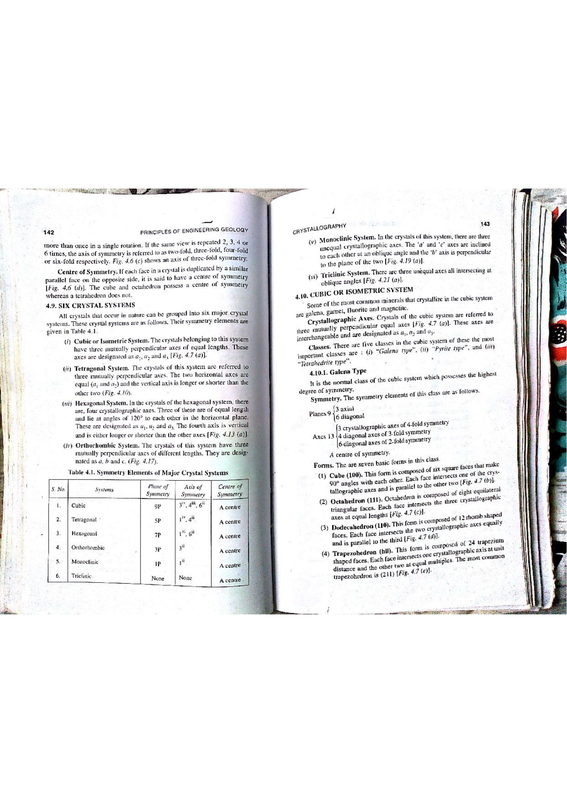
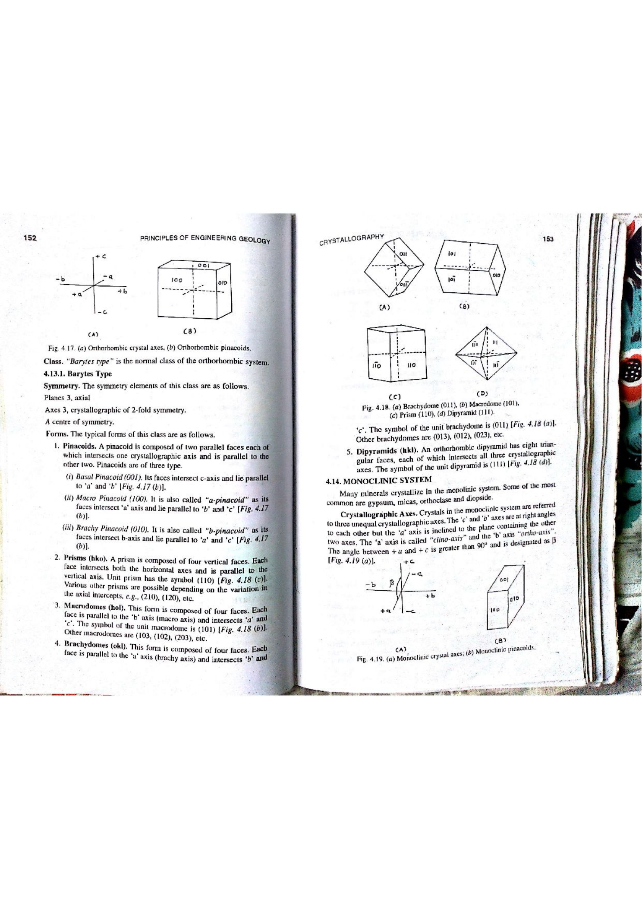

5.1 Nature and Crystallization of Magma
Magma is a naturally occurring, mobile, molten or semi-molten silicate melt generated in the upper mantle or lower crust, consisting of a liquid phase, solid suspended crystals, and dissolved volatile gases ($\mathrm{H_2O, CO_2, SO_2, HCl}$). When magma erupts onto the Earth's surface, it loses its dissolved volatiles and is termed Lava.
Bowen's Reaction Series (1928)
N. L. Bowen demonstrated experimentally that fractional crystallization of a parental basaltic magma follows two parallel reaction series during cooling:
- Discontinuous Reaction Series: Early-crystallized mafic silicates react with the remaining melt at specific temperatures to form new minerals with distinct crystal structures: $$\text{Olivine} \xrightarrow{1200^\circ\text{C}} \text{Pyroxene (Augite)} \xrightarrow{1050^\circ\text{C}} \text{Amphibole (Hornblende)} \xrightarrow{900^\circ\text{C}} \text{Biotite}$$
- Continuous Reaction Series: Plagioclase feldspars undergo continuous solid-solution cation exchange between Calcium and Sodium without changing crystal framework: $$\text{Anorthite (Ca-rich)} \xrightarrow{\text{cooling}} \text{Bytownite} \to \text{Labradorite} \to \text{Andesine} \to \text{Oligoclase} \to \text{Albite (Na-rich)}$$
- Residual Liquid: The lowest-temperature eutectic melt ($\approx 600\text{--}750^\circ\text{C}$) crystallizes Potassium Feldspar ($\text{Orthoclase/Microcline}$), Muscovite, and finally free Quartz.
5.2 Forms of Igneous Rock Bodies
Igneous rocks are classified by their geological setting into Extrusive (Volcanic) and Intrusive (Plutonic/Hypabyssal) bodies. Intrusive bodies are further divided based on structural relations with the host country rock:

Concordant Intrusive Bodies (Parallel to Bedding)
- Sill: A tabular, sheet-like igneous intrusion injected strictly parallel to the bedding planes or foliation of pre-existing country rock. Often mistaken for buried lava flows (sills show baked contacts on both top and bottom).
- Laccolith: A mushroom-shaped or plano-convex concordant intrusion with a flat floor and an arched, convex-upward roof that domed the overlying sedimentary strata.
- Lopolith: A large, saucer-shaped or basin-shaped intrusion whose central portion has sagged down under the heavy weight of the magma (e.g., Bushveld Complex).
- Phacolith: A crescent-shaped, lens-like concordant body occupying the crests of anticlines or troughs of synclines in folded terrains.
- Bysmalith: A plug-shaped or cylindrical laccolith that fractured the roof rocks along circular vertical faults during forcible upward piston injection.
Discordant Intrusive Bodies (Cross-Cutting Bedding)
- Dyke: A tabular, sheet-like vertical or steeply dipping discordant igneous intrusion that cuts across the bedding planes or foliation of surrounding rocks.
- Ring Dykes & Cone Sheets: Arcuate discordant intrusions around volcanic cauldrons: Ring dykes dip steeply outward or vertically; Cone sheets dip inward towards a common magmatic focus.
- Batholith: A gigantic, plutonic discordant igneous body with an outcrop area exceeding $100 \text{ km}^2$, possessing steep outward-flaring walls and no discernible floor, typically composed of granite or granodiorite.
5.3 Igneous Textures and Structures
- Textures (Degree of Crystallinity & Grain Size):
- Holocrystalline: Entirely composed of crystals (typical of deep plutonic granites).
- Holohyaline (Glassy): Entirely composed of non-crystalline glass due to rapid quenching (Obsidian).
- Phaneritic: Mineral grains are coarse enough to be distinguished with the unaided eye.
- Aphanitic: Grains are microcrystalline and cannot be distinguished without a microscope (Basalt).
- Porphyritic Texture: Large, well-formed crystals (Phenocrysts) embedded in a finer groundmass, reflecting a two-stage cooling history.
- Ophitic Texture: Laths of plagioclase feldspar are completely enclosed within large pyroxene (augite) plates, universally diagnostic of Dolerite.
- Poikilitic / Panidiomorphic: Grains of various minerals enclosed inside hosts or all exhibiting euhedral crystal faces (Lamprophyre).
- Structures: Vesicular structure (gas escape cavities), Amygdaloidal structure (vesicles later filled by secondary minerals like quartz, calcite, zeolites), Columnar jointing (hexagonal cooling columns in Deccan Traps), and Pillow lava (subaqueous basaltic eruption).


5.4 Petrographic Descriptions of Common Igneous Rocks
| Rock Type | Texture | Essential Mineralogy | Engineering Characteristics |
|---|---|---|---|
| Granite | Phaneritic, equigranular, hypidiomorphic. | Quartz ($>20\%$), Orthoclase, Plagioclase, Biotite/Hornblende. | High unconfined compressive strength ($100\text{--}250 \text{ MPa}$), excellent foundation rock when unweathered, low porosity. |
| Basalt | Aphanitic, often vesicular/amygdaloidal. | Calc-plagioclase (Labradorite), Augite, $\pm$ Olivine, Fe-Ti oxides. | Dense, tough, high crushing strength; massive varieties excellent for aggregate; vesicular/zeolitic flows require grouting. |
| Dolerite | Medium-grained, diagnostic ophitic texture. | Labradorite, Augite, Magnetite. | Extremely tough and abrasion-resistant due to interlocking ophitic texture; premier road metal and railway ballast. |
| Syenite | Phaneritic, granitic appearance without quartz. | Alkali feldspar ($>65\%$), Hornblende/Biotite, minor plagioclase. | Comparable to granite in structural strength; durable building and monumental stone. |